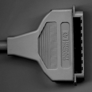
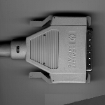
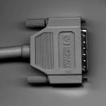

Bail (LD): Squeze (HD): Screw (HD):  
M -> Male -> Stecker
F -> Female -> Buchse
SCSI Single Ended (50 PIN - 50 PIN)
Low Density to Low Density (50 PIN - 50 PIN)
Prod: Connector: Part no:
92222A 0.5m bail/bail M/M 8120-5158
92222B 1.0m bail/bail M/M 8120-4998
92222C 2.0m bail/bail M/M 92222C
C2927A 3.0m bail/bail M/M 5063-1212
C2928A 5.0m bail/bail M/M 5063-12
Cable Extenders (50 PIN - 50 PIN)
Prod: Connector: Part no:
92222D 1.0m bail/bail M/F 92222D extension cable
C2900A 3.0m bail/bail M/F 8120-5519 extension cable
C2901A 5.0m bail/bail M/F 8120-5520 extension cable
C2902A 10.0m bail/bail M/F 8120-5521 extension cable
C2903A 20.0m bail/bail M/F 8120-5522 extension cable
Low Density to High Density (50 PIN - 50 PIN)
Prod: Connector: Part no:
K2284 1.0m bail/scrw M/M 8120-5363
K2283 1.5m bail/scrw M/M K2283
(K2296 1.0m bail/scrw M/M 5062-3383)
(K2297 1.5m bail/scrw M/M K2297)
? 2.0m bail/scrw M/M 5062-3386
High Density to High Density (50 PIN - 50 PIN)
Prod: Connector: Part no:
K2207 1.5m scrw/scrw M/M K2207
K2210 3.0m scrw/scrw M/M K2210
K2209 5.0m scrw/scrw M/M K2209
K2208 8.0m scrw/scrw M/M K2208
K2211 10.0m scrw/scrw M/M K2211
(K2294 0.9m scrw/scrw M/M K2294)
(K2295 1.5m scrw/scrw M/M K2295)
(C2908A 1.0m scrw/scrw M/M 8120-5548)
OLD:
** K2285 1.5m squeeze-lock/bail M/M replaced by K2297
** K2286 1.0m squeeze-lock/bail M/M replaced by K2296
** K2287 1.5m squeeze-lock/scrw M/M replaced by K2295
** K2288 1.0m squeeze-lock/scrw M/M replaced by K2294
SCSI Fast & Wide (68 PIN - 68 PIN)
Prod: Connector: Part no:
. 0.3m scrw/scrw M/M A2095-62019 (Old: 8120-6147)
C2924A 2.5m scrw/scrw M/M A1658-62020
. 5.0m scrw/scrw M/M A1658-62021
C2925A 10.0m scrw/scrw M/M A1658-62022
C2926A 20.0m scrw/scrw M/M A1658-62023
SCSI Specials (50 PIN - 68 PIN)
Prod: Connector: Part no:
C2915A 1.0m bail/scrw M/M C2915A
. 1.0m scrw/scrw M/M 5181-7705
C2906A 2.0m scrw/scrw M/M 5181-7707
C2907A 5.0m scrw/scrw M/M 5181-7708
C2916A 20.0m scrw/scrw M/M 5181-7737
Terminator
Single Ended (50 Pin)
? HD squeze 1252-3932 z.B. fuer Nova active
? HD screw A1658-62016
K2291 LD bail 1252-3920 for peripheral devices active
K2290 LD scrw A1658-62002 for peripheral devices active
C2904A 50 Pin HD scrw A1658-62016 for 9000/700 active
Fast & Wide (68 Pin)
C2905A LD screw A1658-62024 Differential SCSI-3 active
Device Terminator
int. disk resistor pack 1810-1176 for use in 8X7/9X7 systems
on last device (disk) of SCSI bus
3 are required
int. DDS resistor pack 1810-1555 for use for DDS-Drive C1503/C1504
3 are required
int. DDS resistor pack 1810-1176 for use for DDS-Drive C1502A
3 are required
Internal System Terminator
int. cable terminator 1252-4414 for use in 8X7/9X7 systems
if no int. device is terminated
Specials
92166H 50 Pin 8120-4997 for Scanjet IIx (92166H is obs.)
? 50 Pin LD bail 1252-2297 for peripheral devices passive
C221xA series, 595xS series
? 50 Pin LD bail 1252-3251 for peripheral devices passive
C152xA series, C152xB series
? 50 Pin LD bail 12016 80003 Differential for C242xJ series,
C242xJK series, C248xA series
passive
? LD bail 1252-4447 Differential for C248XA series
Old:
(K2289 50 Pin HD bail 1252-3932 K2289 replaced by C2904A active)